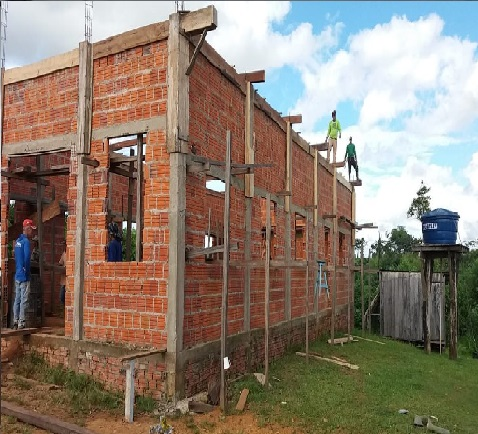
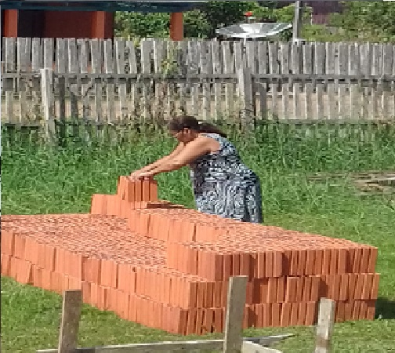
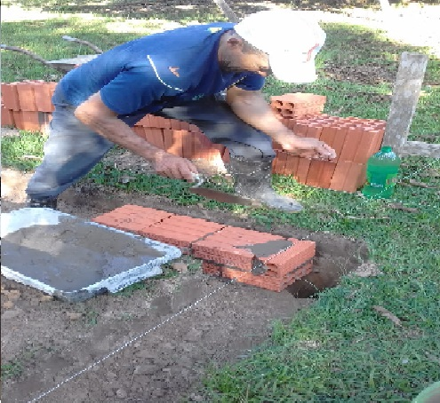
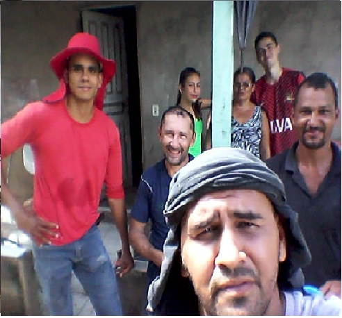
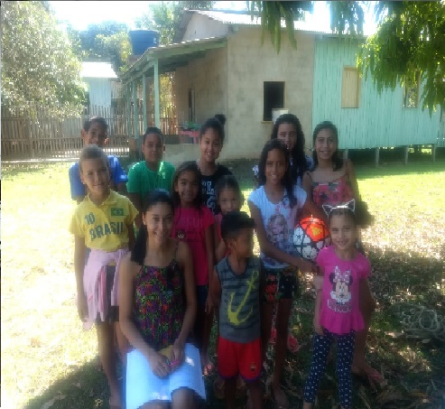

Obras!
A Batista Regular Betel, está construíndo com a direção do nosso Senhor Jesus, e com a ajuda de diversos irmãos na fé, a construção da primeira igreja batista regular no múnicipio do Porto-Acre. Uma região carente do evangelho de Cristo, com várias almas nescessitadas da palavra de amor de Deus, que precisam urgentemente da salvação.
Muitos esforços, estão sendo dedicado a esta obra, não importando sexo, idade, clima, ou ate mesmo dificuldades, todos os irmãos ajudando em prol da construção, desta tão desejada igreja neste municipio. Veja a nossa amada irmã em Cristo, Irma Benilde, mesmo com suas limitações físicas, e numa idade já avançada, mostrando aos jovens que nada é impossível para cristo!
Não podemos esquecer dos homens, os várões, que estão, ou, os que estiverão na frente da construção, deixando seus lares, suas familias, para está lá, muitas vezes num calor imenso, nunca se queixando, pois sabem que tudo que foi realizado, foi para glória de Deus, e somente a Ele e para Ele, são todas as coisas!
Não podemos nunca, esquecer de valorizar os pastores, que iniciarão o projeto à alguns anos, e também ao pastor que assumiu a responsábilidade da obra, pois o mesmo ouviu o chamado de Isaías 6:8 que diz:"Depois disso ouvi a voz do Senhor, que dizia: A quem enviarei, e quem há de ir por nós? Então disse eu: Eis-me aqui, envia-me a mim.". Nosso amado Pr Rondinele Oliveira, que graças ao Pai, e com ajuda de muitos irmãos, tocou está obra adiante.
E irmãos, essa é uma obra díficil, sem atrativos para os mercenários que se nomeam pastores. Pois, está obra amado irmãos, é sem remuneração terrestre, e com incontáveis desafios, como estradas altamente perigosas, muitas delas em situações precarias, muitas vezes sem remuneração financeira, e com acumulos de cansaço. Por que continuar com essa obra? Porquê está obra não é para homens, e sim para Deus, pois a sua palavra diz: "Tudo o que fizerem, façam de todo o coração, como para o Senhor, e não para os homens." Cl3:23. Pois esse será o resultado esperado!
